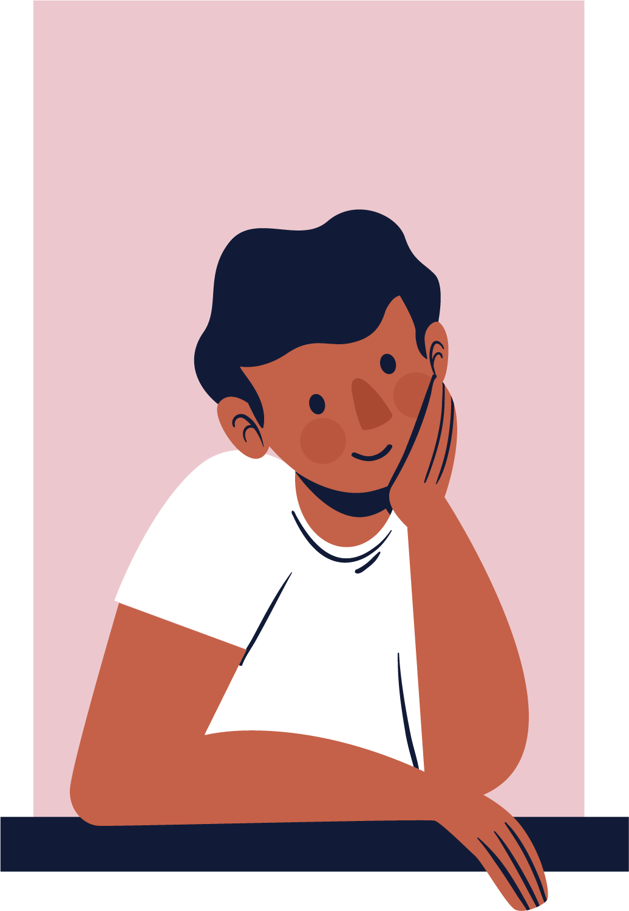
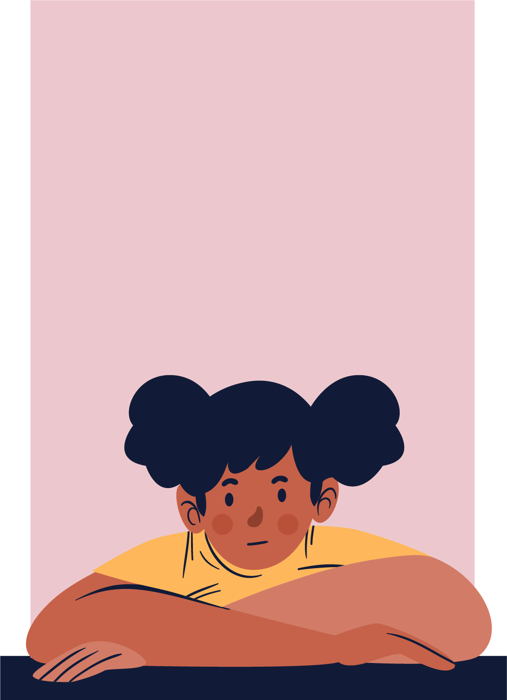

Overview
KidsTeam UW is an intergenerational design team focused on co-designing new technologies for children with children from age 6-12.
Performing user experience research in a University setting provided me with the opportunity to learn a theoretical and structured approach to user research and designing for vulnerable groups.
The main goal of KidsTeam UW is to design new technologies to help children and families connect and examine how long term partnerships with research participants can be beneficial for creating the next generation of technologies.
Role
User Experience Research Qualitative Research Codebook
User Experience Design
Duration
Two Years
Tools
Adobe XD
Opportunities
Help families build connections with technology
Building trust with research participants for a cooperative inquiry research approach
Learning how to ask meaningful, provoking, and appropriate questions that get to the root of "Why?"
Decoding qualitative data
Research based design decisions and advocating for my ideas
01 co-designing
User research in a university setting helped me to develop a theoretical approach to UX research that has a foundation rooted in a co-designing process. KidsTeam used a participatory design method that constitutes research participants as design partners. It takes a deliberate effort to set up a design partnership with a research participant but it creates a balanced interaction that is strengthened overtime.
KidsTeam UW taught me that equality is assumed to take place in design partnerships by some researchers. However, it is hard to treat research participants as equal and to treat a participant as your co-designer. The study needs to balance researcher and research participant harmony from start to finish. Despite frequent use of the term equal partnerships in Participatory Design with children, very little knowledge exists as to how to analyze and explain what an adult-child design partnership is. Because of this, I was able to contribute to groundbreaking research which is something I am really proud of.
02 focus groups
The goal of our focus group sessions was to understand how technology affects the relationship between parents and their children, and develop a solution that will help parents understand their kid's technology use.
We conducted and recorded five participatory design sessions that lasted two hours each with seven participants from ages 6-14. We used the participatory design method in which we treated our participants as co-designers and took into account all of their ideas while designing. This research method is a way to keep young participants engaged throughout the process and exercise creativity. After each session, I placed my findings into affinity diagrams and storyboards that would help me dive deep into understanding the teens. I would continue my research by searching for new topics to discuss with the kids that would generate new findings.
03 Qualitiative data codebook
As a research assistant a large part of my contribution was analyzing our focus group data. All of our research sessions were filmed and it was my responsibility to annotate the videos. While annotating you develop a closer relationship to participants because you are empathizing with them on a deeper level. Oftentimes kids have a looser filter than adults and speak their minds more clearly which I really appreciate! However when it comes to data analysis, this makes it hard to analyze data while also keeping the data integrity so it is important to be as objective and empathetic as possible.
My next step was to highlight any important findings in the data. After discussing with other research assistants, we created a qualitative data codebook to label themes in the research and develop clear findings. A code must be specific and apparent in the data and could be something like “family tech usage in the car.” Creating a qualitative data codebook required deep qualitative data analysis and user empathy.
Conclusion
Conclusion
This study was put on hold due to a global pandemic but I use what I learned from this research in my UX designing process every day!
We left off by presenting concepts to present to the kids that we are beginning to make into wireframes. Designing to foster human connection is needed now in a pandemic more than ever and I am taking what I have learned here to help make new connections.
What I learned
ALWAYS HAVE A CLEAR GOAL IN MIND
Working with kids is fun and I love making UX to help families connect!
How to facilitate a research study in compliance with the IRB and HIPPA for kids
Qualitative research coding
How to present for RUTHLESS STAKEHOLDERS (the kids)